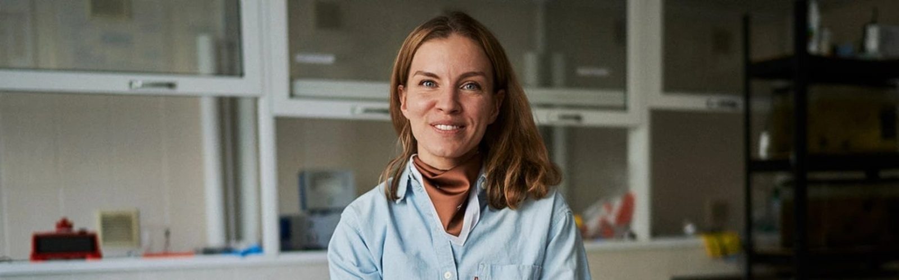
Antarctic in Kyiv: how the new laboratory conducts research on samples from the Southern Ocean
29.06.26
At first glance, this building of the Kyiv Aviation Institute (KAI) doesn’t stand out among dozens of other university buildings in Kyiv. Same security guard at a metal turnstile, same long corridors, and same white doors with glass panels. Nothing hints at the Antarctic hiding behind a couple of those doors: bacteria from the Southern Ocean, samples of starfish and mosses collected near the Vernadskyi Research Base, and test tubes with labels that only people in white lab coats who work here can understand. This is the Laboratory of Polar Biology, established by the National Antarctic Scientific Center (NASC) to analyze biological samples obtained by Ukrainian scientists.
We enter a spacious room with an aquarium on the shelf, equipment in glass boxes, and a Ukrainian flag on the window. The floor tiles are covered with boxes, containers, and devices.
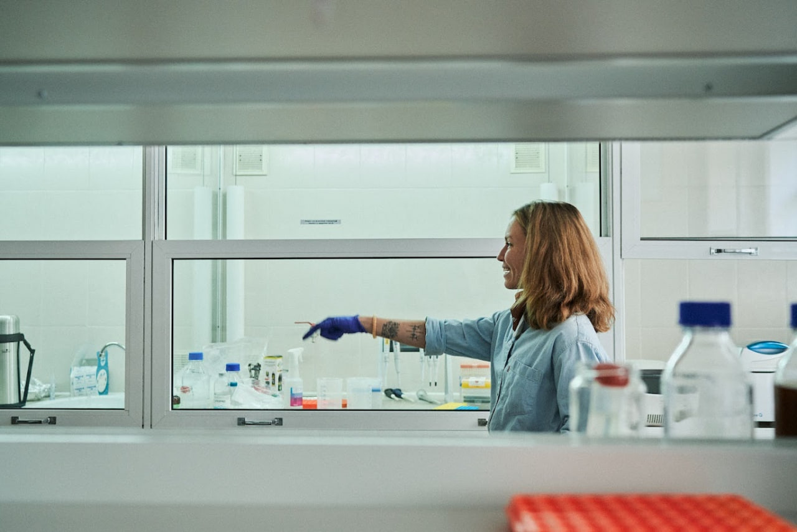
“Nothing to take pictures of yet, currently it’s a bit of a mess here,” Maria Pavlovska, the Head of the Laboratory, says with a smile. “We will be setting up shelves, installing cultivation systems, and constructing new partitions in other rooms. Essentially, we will be constructing a room inside a room. I hope everything here becomes much more interesting by the end of the year.”
NASC has leased KAI’s rooms for five years. Finding space for the laboratory was a separate challenge for the scientists. As a state institution, the Antarctic Center is permitted to lease space only from other state institutions, but the available options were often unfit for research.
“A couple of times, we were offered moldy rooms in basements. If there’s mold in the walls, it’s virtually impossible to set up a molecular genetics laboratory there”, the researcher says. Eventually, the team decided to look for partners who shared their vision for developing science. KAI became such a partner.
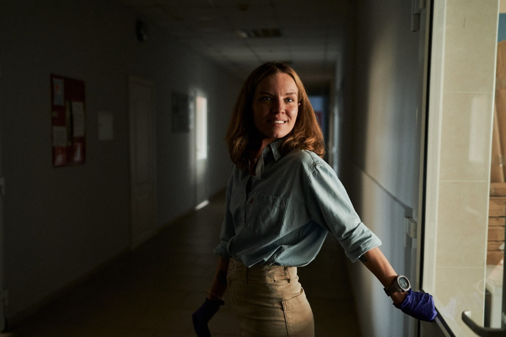
The road from the Antarctic to Kyiv
Not far from the entrance, next to the still-packed equipment, there’s a white box with green and black labels. It holds the Antarctic samples that traveled to Kyiv from the other side of the planet.
Participants in Antarctic expeditions collect part of these samples on the spot at the Vernadskyi Research Base and another part during voyages aboard the NASC’s Noosphere research icebreaker. Those who stay for the winter collect samples of plants, soil, water, or organisms such as marine invertebrates. Some samples undergo primary processing immediately: they are washed, fixed, filtered, and stored in solutions to preserve biological material.
After that, all the samples are documented: their weight, test tube type, and other data. And then they are on their way through international logistics and customs control.
“If not for the Russian-Ukrainian war, we could easily pack the samples onto the Noosphere icebreaker; it has large freezers operating at -80 °C, and some partitions with -20 °C and -40 °C. It’s a wonderful research vessel; it could sail to Odesa, and we could just unload everything there. But currently, the main issue is how to deliver these samples frozen. By plane! But it’s difficult because there are tight restrictions for air transport: you can’t take with you, say, large volumes of dry ice or dewars¹ with liquid nitrogen. There are special containers, but they are expensive and can hold small numbers of samples”, the researcher explains.
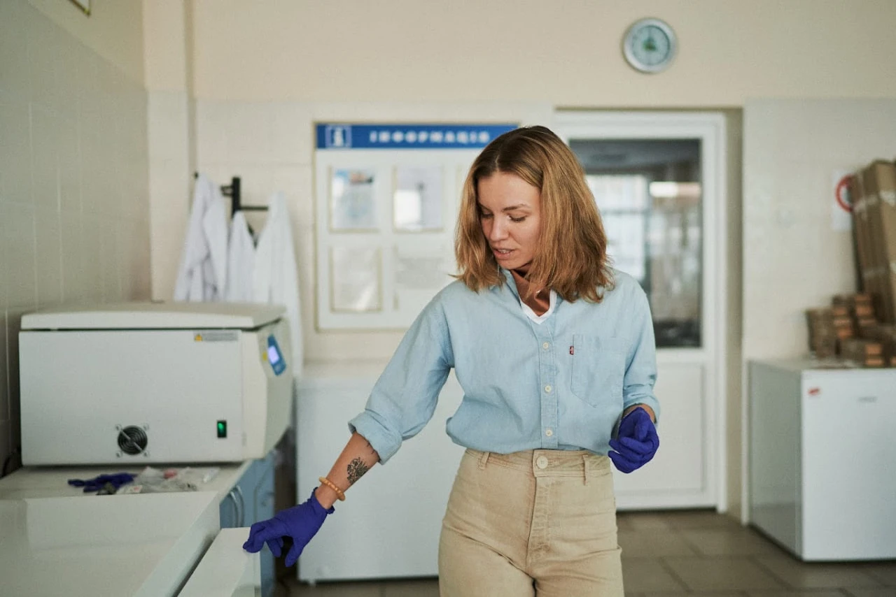
That’s why the materials are packed into these white boxes that look like regular cardboard boxes at first glance, but have special thermoisolating walls that help maintain the required temperature. Industrial cooling elements are put inside. Future research depends on whether this cargo will survive the approximately 17,000 km trip to the laboratory in Kyiv, a distance almost half the length of the Equator.
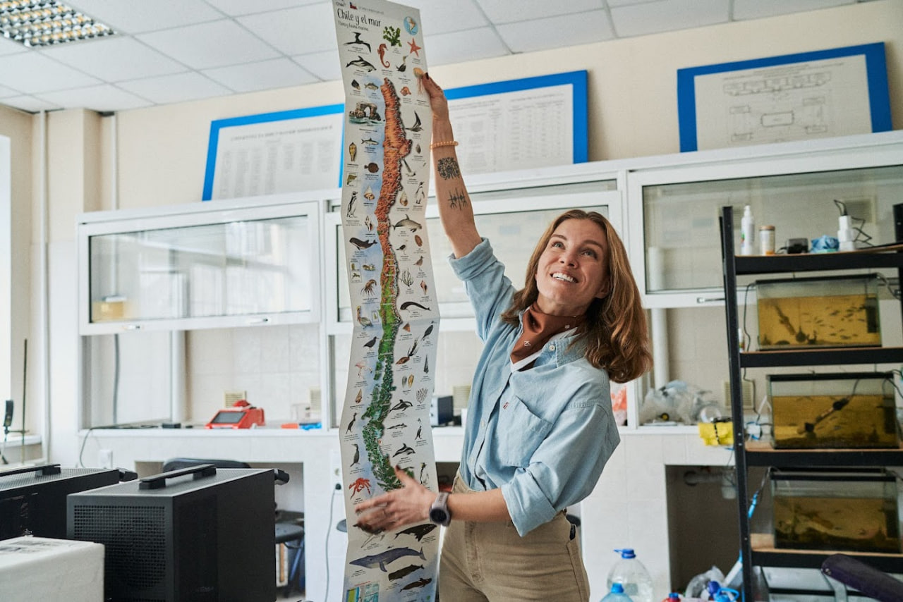
“The samples are unloaded at Punta Arenas, Chile, and from there, they fly across the Atlantic. We could, in fact, check in our luggage from Punta Arenas directly to, say, Paris. But we worry about our samples, so we register our luggage only to Santiago (the capital of Chile — ed.). There, we take it and examine whether everything is intact, and check in the samples again. This way, the samples get to Warsaw. Our colleagues from the Antarctic Program of the Polish Academy of Science are our friends, so we come to them, open the boxes, and add more dry ice. Then, the boxes are sealed again, wrapped up, and transported by bus across the border.”
Genetic barcodes: How to “read” the Antarctic from its DNA
We put on shoe covers and open the door from the office to the laboratory, where most of the research is currently done. Here, researchers work with bacteria, marine and terrestrial microbiota, mosses, plants, and invertebrates. Recently, organisms from the sea floor (benthos) have arrived here; Ukrainian scientists are studying them together with their Polish colleagues.
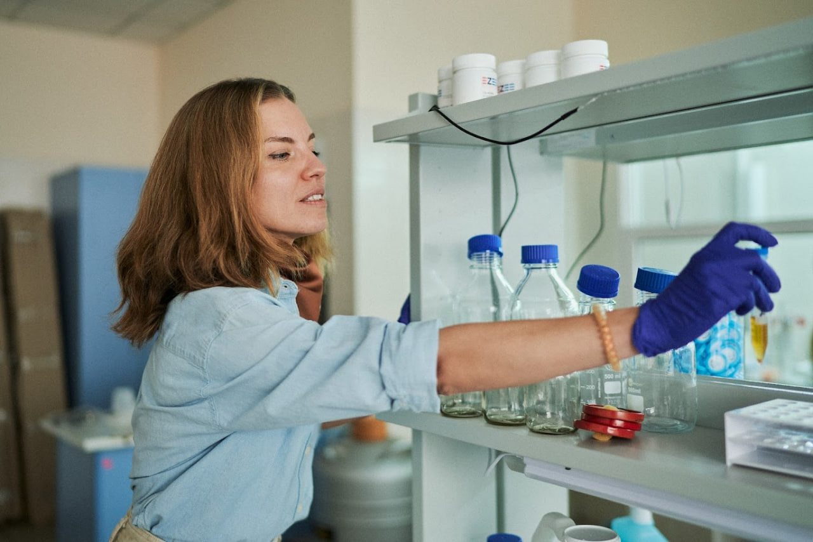
Currently, the Ukrainian team is conducting genetic analysis — DNA barcoding — on them. This is a method that allows researchers to identify the species of an organism from a short fragment of its DNA, a barcode of sorts. For example, it’s enough to take a sample of seawater: DNA traces of everything that lived in that spot or swam by a short time ago remain there. Then, these genetic “fingerprints” are compared to international databases. If there is a match, scientists can identify the organism.
“DNA has specific sites called barcodes. They are used for molecular identification of organisms. They can vary considerably across species but are conservative within a single species. That means that if it’s a starfish, this fragment of its DNA can remain almost unchanged through millennia. So when we detect this piece of DNA and compare it, we can identify what kind of starfish this is,” Maria explains.
Many Antarctic species, however, don’t yet have their own barcodes in scientific databases. That’s why creating such libraries is part of the Kyiv laboratory’s job.
Polish researchers identify species of marine invertebrates and analyze the effects of ocean acidification on them, and Ukrainian researchers sequence their genetic markers and upload the data to international databases.
“We took samples of these starfish, and our Polish colleagues will identify their species, because they are focused on taxonomy. And we will be ‘reading’ barcodes from these samples, comparing them to taxonomy, and filling the databases,” Maria says. “Excrements of Antarctic seals are also on their way to us; we will use them to analyze their microbiome and their diet. There are a couple of penguin eggs too; they remained from the previous project”.
Banana DNA² vs Antarctic bacterium DNA
Along the wall, we see laminar flow cabinets; these are sterile zones where airflow is controlled as rigorously as the contents of test tubes. There are colorful test tube racks, dispensers, and a microcentrifuge on the work surfaces. Everything looks almost ascetic: no superfluous items. Maria dons laboratory gloves.
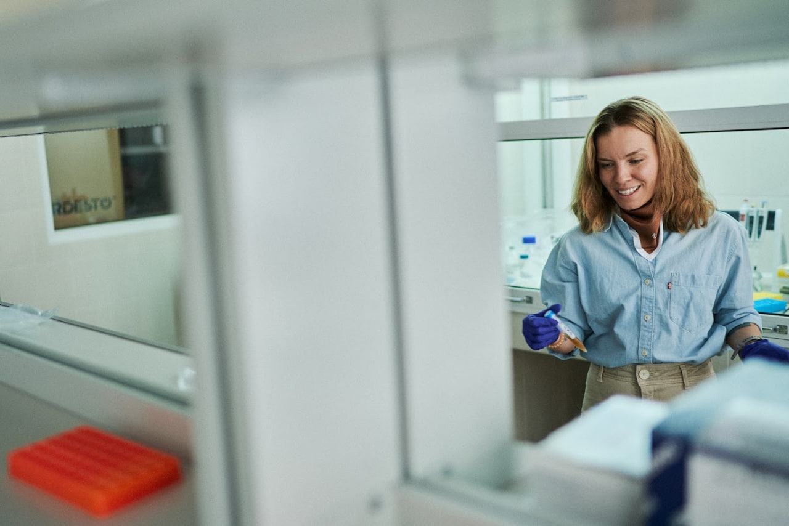
“In this fume cupboard, we extract RNA. In this one, we extract DNA. It has to be done separately, because DNA is broken down by DNases³, and RNA by RNases⁴. For example, we treat this area with DNase to break down the DNA. These are processes that can’t be easily combined,” Maria begins a “tour” for us.
We approach a box with a real-time PCR amplifier, which the researchers use to “read” DNA fragments of Antarctic organisms. During the COVID-19 pandemic, similar systems were used for COVID tests. The principle is the same: the target DNA or RNA fragment is replicated multiple times through a chemical reaction so that it can be detected and analyzed.
Maria turns on the computer: “I’m thinking which PCR to show you. We need something good, something beautiful,” she smiles.
Smooth curved lines appear on the screen. The researcher explains: this bacterium was isolated earlier from an Antarctic plant, and now they are testing whether it has taken hold in new samples. To do this, scientists look for a characteristic DNA fragment of the bacterium in plant tissues. This is how it works: a couple of samples are loaded into a special device. One of them is a control one, where the bacterium is definitely present. The other one is experimental: a plant was treated with the bacterium, and now they want to check the results.
The device then begins replicating the target DNA fragment multiple times. If the bacterium is present, the number of copies is growing, and it’s visible on the screen where the curve starts to rise sharply.
The researcher shows the curve on the monitor: when the line starts to rise, it means that the device has “noticed” the target genetic material. If the two curves are almost identical, the result is considered reliable.
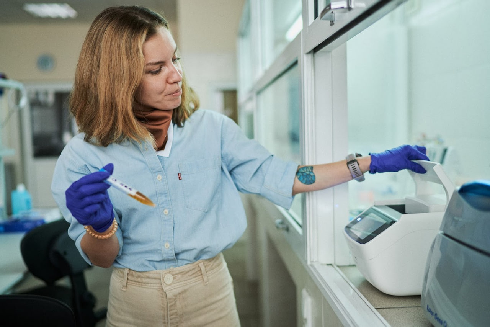
Maria takes a test tube containing yellowish-brown liquid. It’s a nutritional substrate where bacteria live. These test tubes may contain bacteria yet to be described by humanity.
Maria Pavlovska explains that, through a microscope, it’s possible to see a bacterium only vaguely. See its shape, understand whether it’s round, elongated, or stick-like. But it’s not enough to accurately identify its species. To identify a bacterium, researchers turn to its genetic code. To do this, they look for a specific gene, 16S rRNA. First, it’s replicated multiple times by the PCR amplifier.
Then, they “read” — sequence — the material. The obtained sequence is compared to international databases. If there is a match, the bacterium is identified. If not, it’s possible the researchers encountered an unknown or understudied organism.
She shows us a plastic disc with dozens of miniature wells for reactions. These are used to initiate the replication process of target DNA copies. After preparation, the samples are sealed with a film: in molecular biology, a single errant cell can ruin the results.
“The problem is, when you do PCR, and something accidentally falls into a test tube, it may start replicating as well. This means that if I sit here in these clothes and put my hand in without a lab coat, biomaterial from my skin can get into the test tube and pollute the reaction. That’s why we conduct all the PCR reactions in specific lab coats and work with them here, in this box. Here, UV-light turns on and sterilizes everything while it’s on. Then, we seal the test tubes and move them; otherwise, we could simply replicate multiple copies of Maria Pavlovska’s DNA. It’s, in fact, not that interesting”, the researcher jokes.
Maria approaches the table with kits for processing various materials, including DNA and RNA extraction.
“For example, you can extract DNA from a banana right there (she points at a window): sit down at the side of the road, take soap, salt, and alcohol, and extract a banana’s DNA — and you’ll see it with your naked eye. It’s very simple; I show it to school students. But if you need to extract DNA from an Antarctic bacterium, this isn’t a trivial task. You need very specific chemistry and specific conditions to do it. Because there’s very little of it. A banana is a big thing with a lot of DNA. A bacterium is very, very tiny. And, for example, if we work with a green plant, we shred, grind the plant, and then conduct the extraction. And the majority of the DNA we get comes from the green plant, not from the bacterium. And we need the bacterium that lives inside it,” Maria explains.
The evacuated centrifuge
“Let me show you a centrifuge with a great story,” Maria intrigues us.
The centrifuge was commissioned back in 2021, but due to the long shipping time, the device arrived in the Kyiv region right before the full-scale invasion in February 2022. All that time, the centrifuge was in a warehouse in Brovary⁵, and as Russian troops approached the Kyiv region, lab employees worried about whether it could be rescued.
Maria recalls that, while staying in the Volyn region at that time, she corresponded with her colleagues and asked them to rescue the centrifuge, because “it’s cool, expensive, and has a cooling system. And we love it very much because we need it a lot for RNA extraction.”
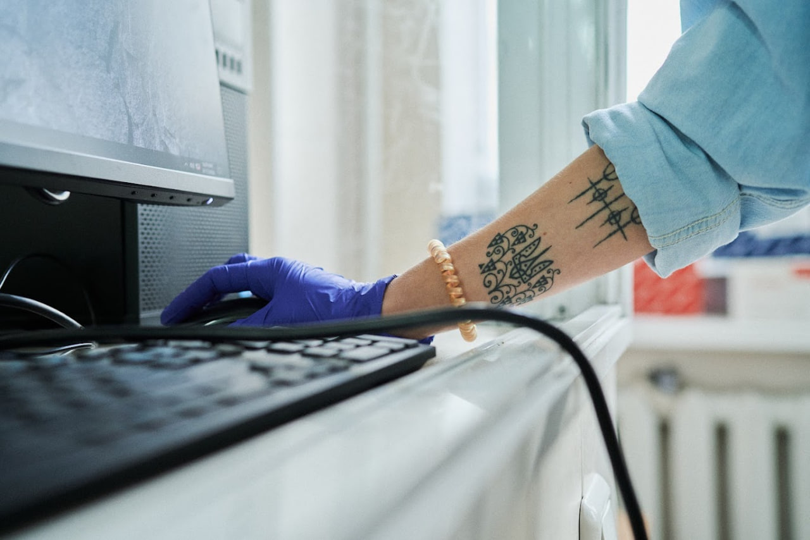
Eventually, the centrifuge was evacuated — someone from the military or from the Territorial Defense Forces⁶ helped transfer the device to a safer place.
“For some reason, it ended up in the office of Prozorro⁷ and was ‘living’ there until the Kyiv region was liberated. Then, we took it away. And now, it lives here and does its job,” the researcher tells us.
This device is especially important for working with RNA, which is very temperature-sensitive. That’s why all the stages of sample preparation are done in the cold to stop RNA from disintegrating. This allows researchers to preserve the information about how genes operate in cells under real conditions.
The centrifuge has metallic rotors for both large and small test tubes. Maria takes one of them: “You may try lifting it if you like. It’s really heavy.” I stretch my hands and, in a minute, feel how the weight pulls my hands down.
From Antarctic ice to cosmetics
Maria opens the freezer and takes out a clear plastic bag with the inscription “OCEAN” in black marker. Inside it are test tubes containing frozen samples.
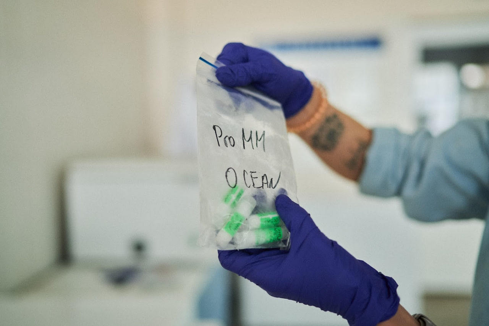
“Here, we store samples destined for RNA extraction. RNA is stable only at very low temperatures. There are also bacteria in a special solution containing glycerol, which protects cellular walls from damage at low temperatures. We take these bacteria from here, reanimate them, and grow them on nutritional substrates,” Maria says.
To maintain their maximum viability, they are stored in the freezer at -80 °C.
“It may sound strange. You’d think: this should be an uncomfortable temperature for them. But in fact, in these conditions, their metabolism stops completely, they stop “eating” the substrate they are growing in, and simply go into a dormant state. And then, when you spread them onto something tasty and nutritious, some of them — not all, of course — ‘wake up’”, the scientist explains.
These spring marine bacteria were cultivated directly in the Southern Ocean. To do this, researchers welded a metallic box, placed bottles containing the nutritional substrate inside, and submerged the entire construct in the ocean. Later, the bacteria were cultivated on a substrate, and specific colonies were selected and taken for research.
“I, together with the students, have already extracted their DNA to send it for sequencing, read the genome of these bacteria, and see whether it contains biosynthetic gene clusters⁸. But in parallel, we sent those same samples to our German partners so they could immediately start cultivating them and researching how it manifests directly in the culture, because life is short. Because we will be studying how it’s all coded in the genome, and they will examine how the bacteria behave in the culture,” Maria says.
In another freezer, at -20 °C, samples for DNA analysis are stored. The researcher says they are trying to process the material as quickly as possible while the samples haven’t deteriorated.
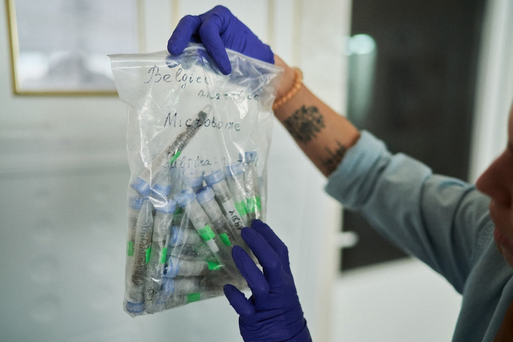
Maria takes out a plastic bag filled with test tubes. Here are samples of mosses that host Belgica antarctica, the only endemic Antarctic insect. Researchers study how it survives in extreme cold and the conditions to which it’s adapted.
Other bags contain cryo algae. Maria shows us filters with bright orange traces.
“Cryo algae live in very cold environments — in small water capillaries that form in the ice. Why are they so cool? See, they are red. This is a filter with tiny pores 0.2 micrometers in diameter. Microalgae and bacterial cells get stuck there,” the researcher sorts through the test tubes with filters.
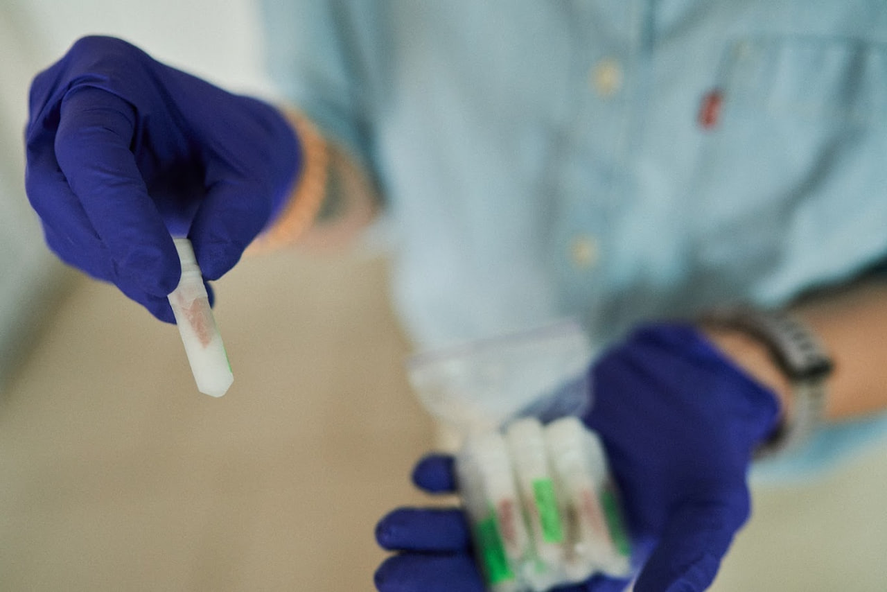
The algae are, in fact, green, she says, but they start producing protective pigments — beta-carotinoids and astaxanthin — because of the intense UV-radiation in the Antarctic. These pigments paint the snow in reddish tints.
“These algae start synthesizing various photoprotectors that are promising for studying such compounds,” the researcher says.
They are already used in cosmetics, sunscreens, and food additives. Astaxanthin, a red algal pigment, is particularly considered a powerful antioxidant.
There’s a large cylinder with liquid nitrogen next to the freezers. It’s used during RNA extraction from Antarctic plants. Before the process, a sterile mortar is filled with nitrogen, and a tiny plant is placed inside to be quickly ground by hand. Otherwise, the sample will be smeared on the walls of the mortar, and there will be too little of the precious RNA to do the analysis. The scientist says that her colleagues learned about this method in Finland, and now it’s an almost indispensable life hack in the laboratory.
“Where’s the seal poop?”
We return from the laboratory to the office, and Maria leads us to a small red device, similar to a mobile printer or a laboratory scanner. It’s one of her favorite devices in the laboratory, she says: a spectrophotometer used to measure DNA and RNA concentration.
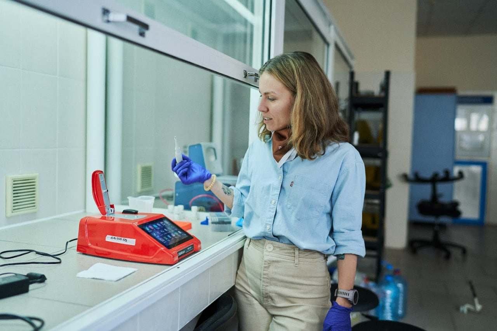
“How does it work? You put a tiny drop of DNA here, a micro-microscopic one. I can even show you what it looks like,” Maria says excitedly and takes an automatic dispensing pipette.
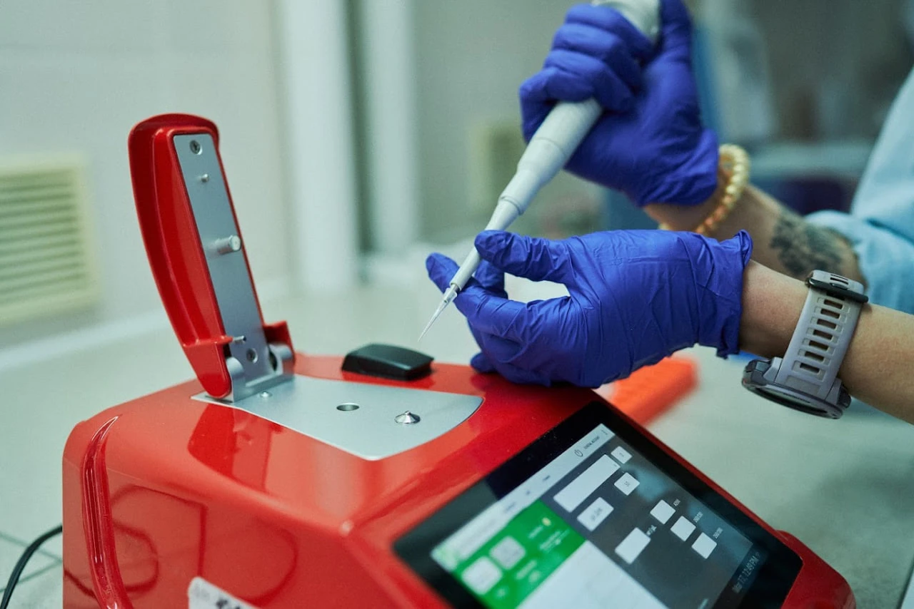
She puts a drop of buffer solution on the platform. At first, the device measures the “clean” buffer — it’s a so-called background or blank — and then, the DNA solution. Then the spectrophotometer measures how the molecules absorb specific wavelengths of light. For DNA, it’s the wavelength of 260 nanometers. By the intensity of light absorption, the device measures the concentration of genetic material in the sample.
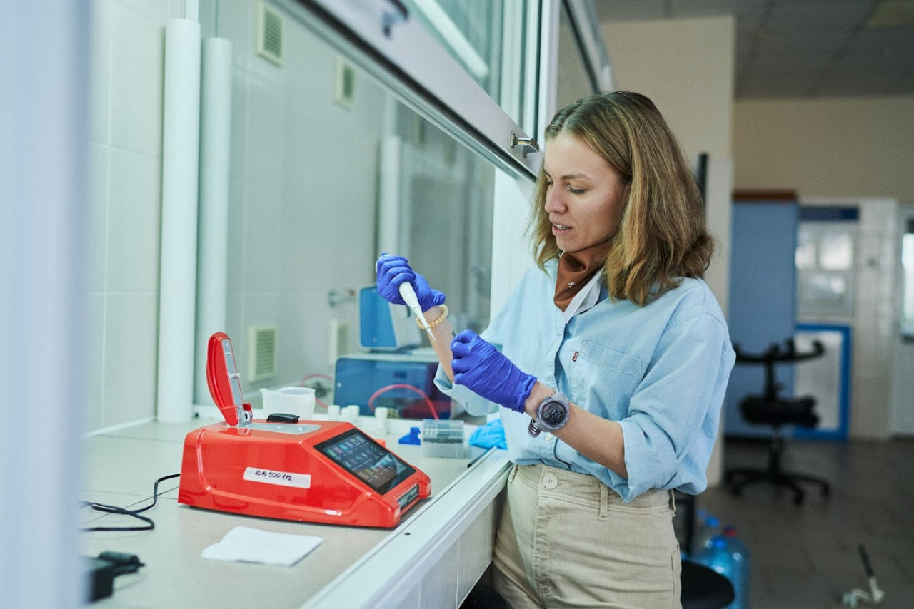
Maria opens the analysis results for the bacteria from the -80 °C freezer on the screen. These are the same bacteria that were grown in the Southern Ocean. Very high concentrations of DNA are visible on the graph.
The researcher explains that for basic amplicon sequencing of bacteria, around 10 units are sufficient; in one sample, they detected over 290 units. This means that this material will suffice for a large number of tests and measurements.
“This happens only when everything goes very well. And it doesn’t always go like that,” she smiles.
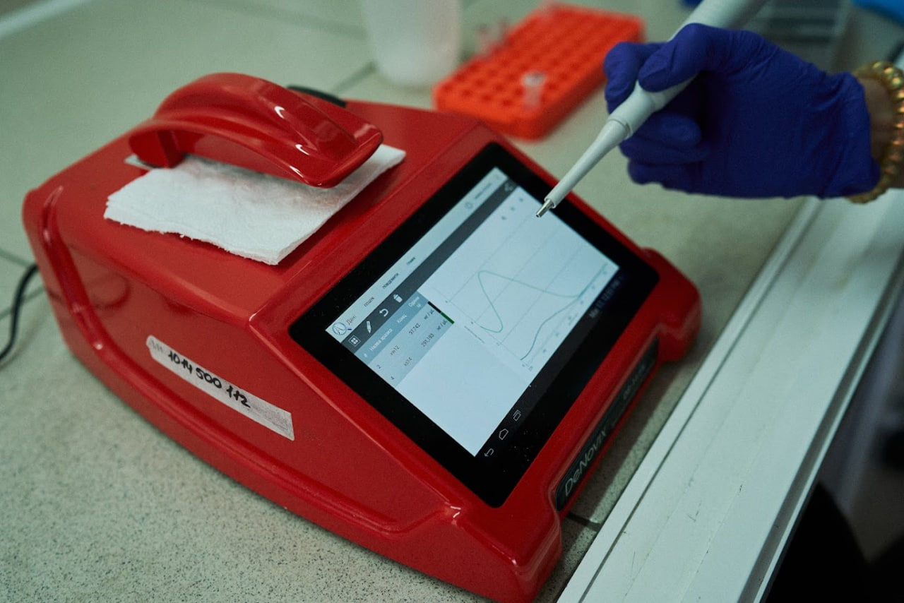
At the wall, across from the device, there are two fridges filled with samples. Maria jokes that they haven’t yet set up a separate fridge for food in the lab. When she takes a snack with her to work, she says, she doesn’t even have a place to put it: all the fridges are full. First, they planned that one of the fridges would be for employees’ personal use, she remembers, but in the end, it also filled up with test tubes and containers of research materials.
We exit into the corridor and look through a glass pane into the next paired room of the laboratory. Part of the equipment is still in the boxes. Nobody is working there yet, because the room is still being set up.
Maria shows us two large thermostats; these will be used to grow bacteria. Next to them is a biosafety cabinet where plants will be cloned under sterile conditions. They are planning to divide this cabinet into partitions and install separate conditioning systems, she says, to maintain different temperatures and conditions for bacteria and plants. Small fridges for creating specific “microclimates” are planned here as well. In them, the researchers will be able to experimentally recreate various scenarios — for example, changing temperature or other environmental conditions — and observe how the bacteria and the plants respond.
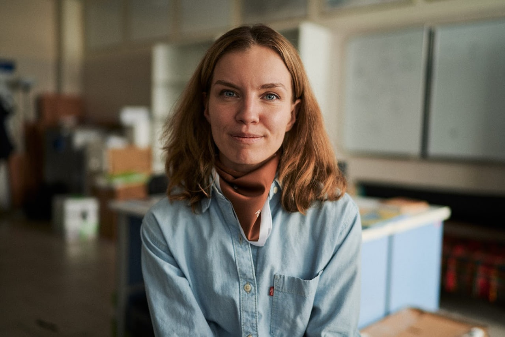
In the next room, we see markings for future partitions and shelves on the floor. Part of the space will be separated for cultivating bacteria and plants, and the other half will host microscopes and sequencing equipment. The equipment isn’t being installed yet — the renovation has to be finished first.
Partitions, additional constructs, and separate zones for experiments are organized so they can be easily dismantled and moved, since the space has been leased for only 5 years. However, the researcher hopes the collaboration with the university will last longer.
The lab gradually comes to life, Maria says. Currently, around five people are working here, along with some students, graduates, and researchers who join specific projects. For example, two students are currently finishing their term papers: one on snow algae and the other on bacterial plankton. More people volunteer to join than they are currently capable of accepting, she says. The students were especially interested in the project for researching the excrement of Antarctic seals. Students literally come into the lab with a question, “Where is seal poop?” Maria laughs.
“Life is buzzing,” she smiles. And adds that things move more slowly than they would like, especially because of the war, but it’s OK.
Blackouts are a separate challenge, she says. Currently, the team is preparing to install the backup power system with batteries, inverters, and an alternative power supply. They plan to complete the main part of the job in the summer.
Maria talks about it calmly and pragmatically: “Everyone understands that, in the near future, life won’t get easier, and there will be no coming back to how things were. That’s why the laboratory is trying to adapt to a new reality.”
Backup power supply is necessary, first of all, for the fridges and freezers where samples are stored. For many materials, maintaining a stable temperature is critical. The equipment used to cultivate plants for the experiments will also be connected to the backup system. Maria explains: if researchers study the influence of a specific type of lighting or temperature on the organism, the conditions must remain unchanged. Otherwise, the experiment will lose any significance.
Sometimes the researcher thinks it might be better to set up the laboratory in a basement, but working underground all the time is difficult, too, she adds. For now, the team is trying to make the space as safe as possible in the current circumstances. For example, they consider applying a protective film to the windows to reduce the number of glass shards in the event of an explosion.
“There are numerous risks. But what can we do? They’ve been with us for some time now, we have to learn to live with them,” she says.
Why would one study Antarctic bacteria during a war?
I ask, why should an ordinary person know about research on Antarctic bacteria? Maria answers without hesitation: fundamental science can look “impractical” for decades before instantly changing medicine or everyday life.
To provide an example, she mentions the story about bacteria from hot springs in the Yellowstone National Park. Once, an American researcher studied them simply because he was interested in how life could even exist at such high temperatures. As a result, these bacteria gave us DNA polymerase, an enzyme indispensable for modern PCR tests, including tests for COVID-19.
“We collect our samples in the Antarctic, cultivate specific microorganisms from them, purify the cultures, and study their genome for biosynthetic gene clusters. Then, our partners will grow these bacteria in European laboratories and test whether they can synthesize antioxidants and antimicrobials. Later, they will attempt to scale up the process to obtain larger quantities of the substances we hope to find. Eventually, our partners plan to develop a prototype drug with substances synthesized by bacterial plankton collected at the Vernadskyi Research Base,” Maria explains.
For example, bacteria from cold environments may synthesize enzymes that function at low temperatures. It’s important, the researcher says, because, in industrial processes, a lot of energy is used for heating to enable chemical reactions. And bacteria from the ocean surface are constantly exposed to strong UV radiation, so they have their own protective mechanisms, including antioxidant systems and photoprotective substances. As she mentioned earlier, these substances are potentially of interest to the pharma and cosmetics industries.
Maria emphasizes, however, that fundamental science is important to society even without immediate practical results. “An innovative country that is a donor of technology is usually more successful and more comfortable for living,” she confidently states.
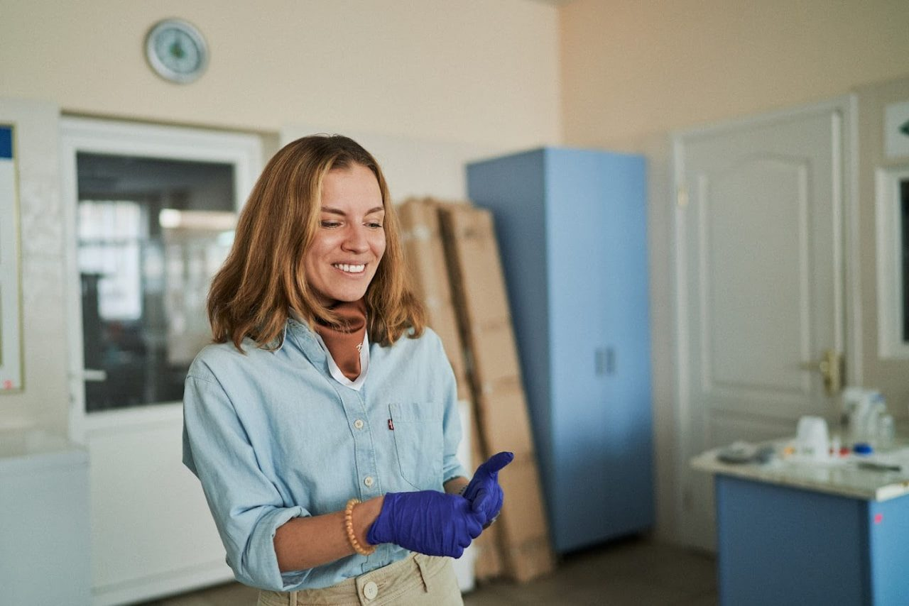
For example, some of the samples now being studied in the laboratory haven’t been seen in Ukraine before. These are, in particular, materials collected during the most recent Antarctic voyage south of the Antarctic Circle, in the vicinity of Margareth Bay, near the British Rothera Research Station. For the first time, samples of marine bacterial plankton, phytoplankton, and microalgae collected at the glaciers were brought to Ukraine. Ukrainian scientists also had the opportunity to study some species of benthic organisms for the first time.
“Also, we have marine bacterial plankton cultivated directly at the Vernadskyi Research Base for the first time. Earlier, we mostly used molecular and genetic methods; we conducted metagenomic analysis⁹ of bacteria, but we didn’t cultivate them and couldn’t conduct experiments directly on cultures. So this year, many new projects have launched,” the researcher tells us.
When asked why Ukraine would need such a laboratory now, during the war, Maria answers that, for her, it is a story about the people and about the future of Ukrainian science more than anything else.
The war and constant instability have only exacerbated the drain of young scientists abroad, she adds. For a talented researcher, it’s much easier nowadays to find opportunities abroad than to stay and work in Ukraine, especially when science is underfunded and there are blackouts and constant stress. That’s why she and the NASC team wanted to create a space here similar to those modern university laboratories she saw during studying and working abroad.
The researcher admits: this lab is currently much smaller than European scientific centers, and many things here are still being set up. However, it already has high-quality equipment, the likes of which she has seen in laboratories abroad, enabling modern biological research. And the main thing, she says, is people who will work with this data and interpret the results.
Another important factor, Maria says, is the feeling that even during the war, the country can’t put all life on pause. “One day, the war will be over, and we will have a lot of work to do. We can find ourselves completely depleted of human potential, and regrowing it will take a long time. Or we can maintain this human potential, a certain level of research, and our own image of an innovative country in the world. And if we can contribute to it now in some way, I think it’s worth it,” the researcher emphasizes.
“It’s important to survive, first and foremost. But who we are after we have survived is also important,” Maria Pavlovska sums up.
Footnotes
1. Dewars are specialized thermoisolating vessels used to preserve substances at extremely low temperatures.
2. DNA extraction from a banana is a well-known experiment. Its principle is that soap ruptures cellular membranes, salt helps separate DNA from other cellular components, and cold alcohol spirit causes DNA to precipitate. As a result, we get a whitish, slimy, or thread-like mass - a cluster of DNA molecules. It's visible without a microscope because a banana has numerous cells and, therefore, abundant genetic material. 3. DNases are enzymes that break down DNA molecules.
4. RNases are enzymes that break down RNA molecules.
5. Brovary is a satelite city of Kyiv.
6. The Territorial Defense Forces are the military reserve component of the Ukrainian Army. In 2022, Territorial Defense units served as a conduit for local volunteers who wanted to defend their homes against the invasion.
7. Prozorro is a governmental organization in Ukraine that is in charge of the eponymous public electronic procurement system.
8. Biosynthetic gene clusters are groups of genes that, working as a unit, step by step, produce a single substance: one gene initiates the process, others create intermediary stages, and others guide it to the end product.
9. Metagenomic analysis is a research method in which researchers take a sample of a specific material and analyze the collective DNA of all the organisms present, without cultivating them in a lab.
The reportage is published with the support of the Alfred P. Sloan Foundation.